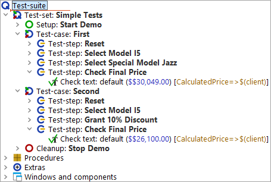
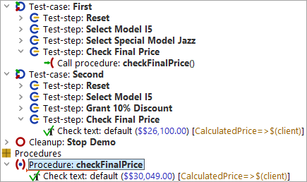
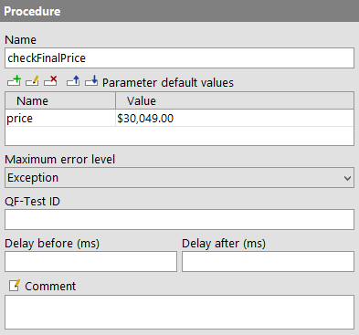
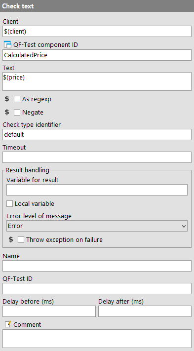

| Version 6.0.3 |
Have a look at the last test-step 'Check final price' of our two test-cases.
|
|  | ||
|
| Figure 6.1: Two almost identical test-steps | ||
They perform the same action, however, with different
data. Even though it is only one node, it makes sense to pack it into a
procedure. We may want to adapt the hard coded values
$$30,049.00 and $$26,100.00 to a different format so that the
check will also work when the format of the price field changes to a different
currency. And we do not want to implement the same algorithm twice. (If you
wonder about the two dollar signs: This is what QF-Test records for a
dollar sign. For replay it does not matter whether you use one or two dollar signs.)
checkFinalPrice. The procedure name follows the
Java convention to run the words together and start the single
words with capital letters. On the other hand QF-Test allows the use of
spaces in procedure names, so you are free to name it as you like.
|
|  | ||
|
| Figure 6.2: Procedure with hard coded value | ||
As expected, the check is now located in this procedure. However, it is valid for
one price only, i.e. $30,049.00. Since we want to use the same procedure
for the second test-case as well we need to make the price a variable
and pass its value as a parameter from the test-case to the procedure.
In the next example we will start by defining a parameter for the procedure. Additionally, we will set a default value for the parameter. Default values are most useful when the parameter usually has that value and you do not want to specify it every time you call the procedure. Even though this does not hold true for the price it is a good example to demonstrate to you how a default parameter works and how to overwrite it with another value.
Let's define the parameter and add a default value:
price as name for the parameter.
$30,049.00 in the value field.
|
|  | ||
|
| Figure 6.3: The Details of the 'Procedure' node | ||
The next step is to replace the value of the 'Text' attribute of the 'Check text' node by a reference to the variable.
NoteVariable syntax: When working with variables you need to bear
in mind that in some places you need to tell QF-Test the name of the variable and in others
you want to refer to the value of the variable. In the Name column of the
Parameter default values table of the 'Procedure' node QF-Test expects the name of a
variable. It is price, which is why you typed the word price.
In the 'Text' attribute of the 'Check text' node details
QF-Test expects a character string for comparison with the text of the UI element.
As we want to use a value stored in a variable, we have to tell QF-Test not to use
the entered string as plain text, but to interpret it as a reference to the value
stored in a variable.
In QF-Test this is done by enclosing the
variable name in $(). In our case the variable reference is
$(price). If you did not put the variable name into
$(), QF-Test would compare the price (a number) shown in the UI element
to the string price, which is obviously nonsense.
$(price) in the 'Text' attribute of the 'Check text' node details.
|
|  | ||
|
| Figure 6.4: 'Check text' node | ||
It should execute without an error.
| Last update: 9/6/2022 Copyright © 2002-2022 Quality First Software GmbH |